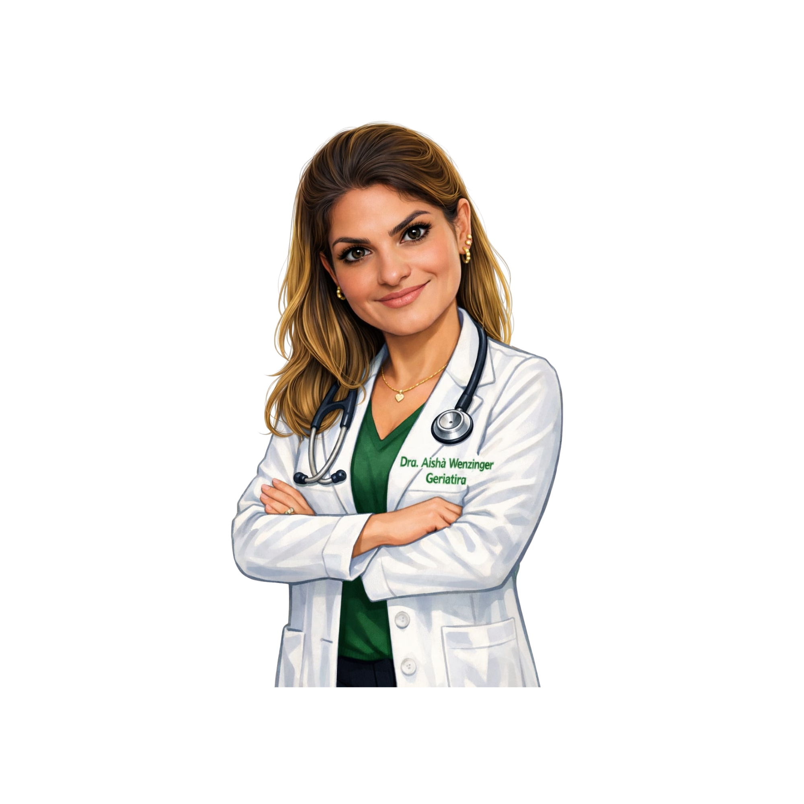
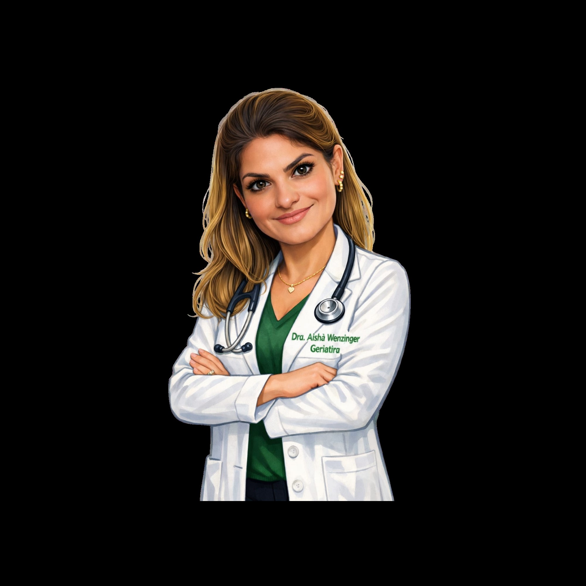
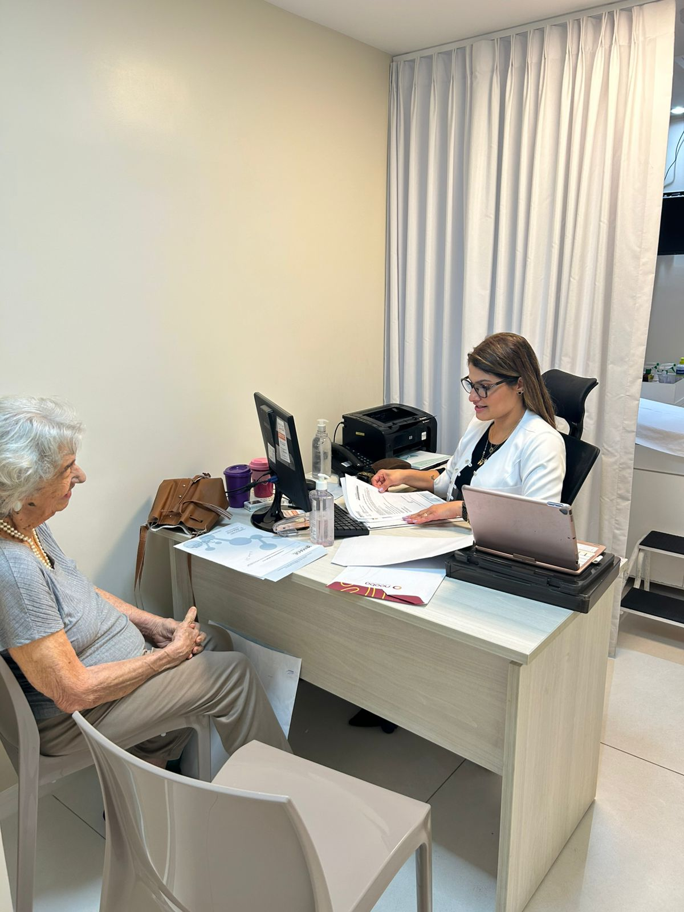

Atenção Especializada para Idosos
Cuidados humanizados e personalizados para a melhor idade, seja em casa ou em nossos consultórios.
Agende sua consultaTelemedicina
Consultas online com segurança e comodidade, sem sair de casa.
Atendimento Domiciliar
Visitas médicas no conforto do lar, garantindo cuidado integral e humanizado.
Atendimento Presencial
Consultas realizadas em consultório com infraestrutura completa para seu conforto.

Dra. Aishá Wenzinger
CRM: 20473
RQE: 19692
Sobre Mim
- Dra. Aishá Wenzinger: Clínica Médica, Geriatria e Cuidados Paliativos.
- Médica graduada pela Escola Bahiana de Medicina e Saúde Pública, com 17 anos de formação. Iniciou sua trajetória profissional atuando em atendimentos de emergência e no Programa de Saúde da Família em Esplanada (BA), entre 2009 e início de 2010.
- Devido à sólida experiência na área de urgência, assumiu precocemente a função de Coordenadora Médica do Serviço de Ambulância MedSalva, cargo que exerceu por cerca de quatro anos. Em seguida, iniciou formação em Clínica Médica no Hospital São Rafael (2011–2013).
- Após esse período, manteve atuação em Clínica Médica e Emergência até 2015, quando iniciou sua formação em Geriatria no Hospital Santo Antônio – Obras Sociais Irmã Dulce, concluída em 2017. Permaneceu na instituição até 2022, período marcado por intensa dedicação, especialmente durante a pandemia de COVID-19, que demandou cuidado e compaixão frente à vulnerabilidade dos idosos assistidos.
- Em novembro de 2022, assumiu o desafio de estruturar o serviço de Geriatria do Hospital Português, onde permanece até o presente momento, consolidando uma equipe voltada ao cuidado integral da pessoa idosa, com foco em desospitalização segura, manejo clínico de idosos frágeis e atenção centrada na pessoa.
- Possui especialização em Cuidados Paliativos pelo Instituto Paliar e ampla experiência em ambientes hospitalares, ambulatórios e atendimentos domiciliares, com atuação também em telemedicina e consultório próprio. Oferece assistência personalizada a idosos com limitações funcionais ou acamados, prezando pelo cuidado integral, humanizado e contínuo.
- É reconhecida pela escuta qualificada, empatia no cuidado e compromisso com a medicina baseada em evidências, aliando conhecimento técnico à sensibilidade humana em todas as fases do envelhecimento.

Experiência Profissional
- Formação Médica: Escola Bahiana de Medicina e Saúde Pública – Conclusão em 2008
-
Hospital Geral do Estado (HGE 2) – Salvador:
- Médica Clínica (Unidade Intermediária 2): 2022 - presente
- Médica Emergencista: 2013 – 2023
-
Hospital Português – Salvador:
- Coordenadora da Geriatria: Nov 2021 - presente
- Médica da Equipe de Desospitalização: Desde 2022
- Médica Emergencista: 2014 – 2024
-
Clínica NewLife – Salvador:
- Médica Geriatra (Consultório): 2016 - presente
-
Atendimento Domiciliar em Geriatria:
- Cuidados a idosos com limitações e acamados: 2017 - presente